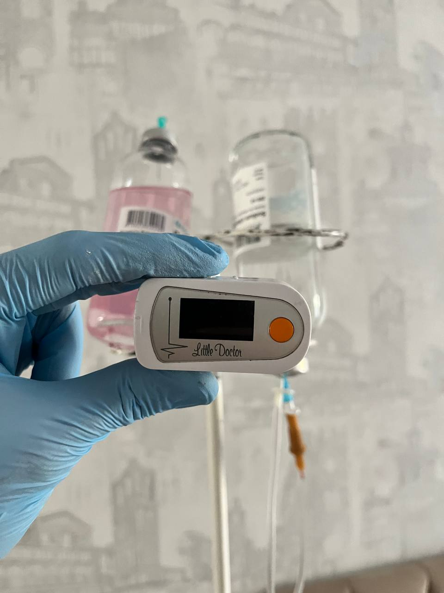

+380(97) 369 76
65
+380(97) 369 76
65Капельница от алкоголя на дому Запорожье
Капельница от алкоголя на дому - лучший метод лечения любой интоксикации
Работаем в Одессе, Киеве, Львове, Харькове, Днепре, Запорожье, Черноморске


Бесплатная консультация, работаем круглосуточно 24/7
Капельница от алкоголя на дому - лучший метод лечения любой интоксикации
Работаем в Одессе, Киеве, Львове, Харькове, Днепре, Запорожье, Черноморске
Капельница от алкоголя на дому — это современная комбинированная медицинская манипуляция которую проводят врачи наркологи для снятия острой или хронической алкогольной интоксикации с помощью инфузионной и таблетированной терапии. Врачи медицинской службы UmbrellaPlus “Безопасная наркология” выезжают домой в тех случаях когда пациент по какой-либо причине не хочет или не может обратиться в стационар и пройти курс дезинтоксикационной терапии, в таких случаях мы можем поставить капельницу от алкоголя на дому в Запорожье или по области. Капельница от алкоголя на дому очень быстро устраняет симптомы алкогольной интоксикации, нормализую общее состояния, а так же восстанавливает адекватную работу всего организма. Для качественной детоксикации от алкоголя и купирования абстинентного синдрома в состав капельницы от алкоголя на дому входят дезантоксиканты, антиоксиданты , гепатопротекторы , витамины и аминокислоты которые поомгают вывести все негативные “шлаки” и “токсины” из организма человека. Главное преймущество в капельницы от алкоголя на дому - это безопасность выхода из запойного состояния любой сложности.
Капельница от алкоголя на дому — сегодня является самым популярным методом в лечении острой или хронической алкогольной интоксикации. Капельницы от алкоголя на дому используется для снижения и купирования негативной симптоматики вследствие длительного употребления спиртных напитков. Она ускоряет процесс метаболизма, восполняется недостаточное количество жидкости и минералов в крови, а так же насыщает организма витаминами, аминокислотами и глюкозой, тем самым поддерживает общее состояние здоровья человека, что очень сильно страдает при длительных запоях. В Запорожье, что бы поставить капельницу от алкогольной интоксикации на дому нужно обратиться в медицинскую службу UmbrellaPlus “Безопасная наркология” по номеру 050-021-69-57.
Прокапаться после запоя — это комбинированная медикаментозная терапия, которая необходима для быстрого и эффективного снятия острой алкогольной интоксикации. Качественно прокапать от алкоголя после запоя дома могут только врачи — наркологи которые проводят первичную диагностику и оценку здоровья пациента, а так же прокапывают от алкоголя на дому или в стационаре. Состав лекарственных средств для того что бы прокапаться после запоя подбирается индивидуально, исходя из симптомов которые может испытывать человек находясь в состоянии сильного алкогольного отравления. Процедура капельниц от алкоголя на дому проходит в спокойной и тихой домашней обстановки, что позволяет добиться полного покоя и расслабления психологического аспекта пациента. Капельницы от алкоголя на дому всегда хорошо переноситься и широко используется в лечении любой сложности алкогольной интоксикации, ведь первые субъективные симптомы по улучшению общего состояния больного наступают уже через 15-20 минут после начала терапии.
Капельница от алкоголя должна подбираться индивидуально врачом наркологом, учитывая объективное состояние человека находящегося в остром или хроническом алкогольном отравлении. Традиционно капельницы которые ставят алкоголикам имеют в своем составе солевые и электролитные растворы, сбалансированные корригирующие инфузии, ощелачивающие препараты для сильного дезинтоксикационного эффекта, препараты для вывода токсинов из кровяного русла “интракорпоральные лекарственные средства”. Антигипоксанты, антиоксиданты, а так же цитопротекторы которые обязательно входят в состав комплексной дезинтоксикационной терапии при любой форме алкогольного отравления. Витамины и аминокислота помогают восстановить организм и поддержать адекватную работу всех органов и систем. Гепатопротекторы — самый главный препарат при лечении алкогольной интоксикации и запоев. Капельницы от алкоголя на дому или в стационаре всегда определяет лечащий врач нарколог. Учитываем широкий спектр физического и психологического составляющего пациента, продолжительность запоя, а так же наличия хронических заболеваний.
Вывод из запоя на дому Запорожье — это процедура, которую проводят только самые опытные и квалифицированные наркологи UmbrellPlus “Безопасная наркология” имеющий опыт работы в интенсивной терапии или отделения скорой помощи. Пациент, который находится в состоянии алкогольной интоксикации получает комбинированную инфузионную терапию с помощью капельницы от алкоголя. Мы предлагаем высокоэффективную методику снятия острой алкогольной интоксикации с нормализацией работы всех органов и систем. Мягкий вывод из запоя с купированием всех негативных синдромов похмелья. Помните что когда употребление спиртного начинает иметь регулярный характер у человека начинает формироваться физическая зависимость и патологическая тяга, с возникновением алкоголизма который проявляется первыми запойными состояниями, это становиться очевидным для окружающих, а сам пациент нуждается в медицинском вмешательстве. Вывод из запоя на дому в Запорожье проводит врач медицинской службы UmbrellaPlus “Безопасная наркология”, что бы проконсультироваться с наркологом позвоните по номеру 050-021-69-57.
Наркологический центр UmbrellaPlus “Безопасная наркология” предоставляет высококвалифицированную и быструю круглосуточную помощь пациентам находящимся в состоянии острой или хронической алкогольной интоксикации прямо на дому. Алкогольная зависимость которая приводит к запойным состояниям - это повод для срочного наркологического вмешателства. Для того что бы вызвать врача нарколога домой нужно позвонить по номеру 050-021-69-57.Выведение из запоя на дому в Запорожье проводиться круглосуточно, доктор приедет к вам в течении одного часа поставит капельницу от алкогольной интоксикации или запоя , а так же даст дальнейшие рекомендации по возможному лечению алкогольной зависимости. Выведение из запоя включает в себя введение внутривенных растворов , дезинтоксикационных препаратов которые максимально быстро минимизируют последствия длительного алкогольного употребления. Алкоголизма - это не приговор , это повод для срочно консультации врача нарколога медицинской службы UmbrellaPlus города Запорожье.
В медицинской службе UmbrellaPlus “Безопасная наркология” врач нарколог выезжает на дом к пациенту для оказания быстрой и высококвалифицированной медицинской помощи. Такой метод позволяет начать наркологическое лечение в ближайшие сроки. Вывод из запоя на дому или капельница от алкоголя дома проводятся в случах когда пациент не может или не хочет по какой-либо причине обращаться в стационар. Вызов нарколога на дом в Запорожье происходит максимально анонимно и конфиденциально для создания больного комфорта больного. Что бы вызвать нарколога в Запорожье позвоните по номеру 050-021-69-57 - Вызов нарколога в Запорожье для вывода из запоя или капельницы от алкоголя проводится круглосуточно.
Как выйти из запоя на дому ? Самым быстрым и безопасным способом вывода из запоя на дому является капельница от алкоголя. Сегодня врачи наркологи медицинской службы UmbrellaPlus “Безопасная наркология” предлагают плавный вывод из запоя на дому или в стационаре с помощью комбинированной инфузионной терапии которая направленна на снятие острой алкогольной интоксикации, а так же купирования симптома опохмеления с последующим снятием патологического влечения к спиртному. Частная медицинская служба UmbrellaPlus анонимно и конфиденциально проводят лечение алкогольной зависимости и интоксикации. Врач окажет вам высококвалифицированную помощь: Выведут из запоя любой сложности. Пропишут дальнейшее таблетированное лечение. Окажут психологическую помощь в аспекте лечения алкоголизма. Лечение алкогольной зависимости начинается с быстрого и мягкого вывода из запоя. Второй шаг в лечении алкоголизма — это кодирование с помощью укола или подшивки. Мы гарантируем анонимность каждого нашего пациента которому мы оказываем индивидуальную и профессиональную медицинскую помощь. Для вывода из запоя мы используем инновационные медикаменты, что бы в минимальный срок добиться наилучшего эффекта в лечении алкогольной зависимости.
Стоимость капельница от алкоголя на дому в Запорожье начинается от 1699грн и может менятся в зависимости от длительности и тяжести алкогольной интоксикации.
| Услуга | Цена |
|---|---|
| Лечение алкоголизма Запорожье | От 1499 грн |
| Вывод из запоя Запорожье | От 1499 грн |
| Вывод из запоя на дому Запорожье | От 1699 грн |
| Капельница от алкоголя Запорожье | От 1499 грн |
| Капельница от алкоголя на дому Запорожье | От 1699 грн |
| Лечение пивного алкоголизма Запорожье | От 1499 грн |
| Лечение женского алкоголизма Запорожье | От 1499 грн |
| Кодирование от алкоголизма Запорожье | От 3999 грн |
| Кодирование уколом Запорожье | От 3999 грн |
| Кодирование от алкоголизма уколом Дисульфирам | От 3999 грн |
| Кодирование от алкоголизма уколом Эспераль | От 5500 грн |
| Подшивка от алкоголя Запорожье | От 9999 грн |
| Кодирование по методу Довженко Запорожье | От 14999 грн |
Капельница при алкогольной интоксикации на дому или в стационаре и капельница от запоя может существенно отличаться в зависимости субъективного и объективного состояния больного, а так же длительности алкогольной интоксикации. Например, при однодневном алкогольном употреблении (перепое) будет использоваться состав для быстрого и эффективного купирования симптомов отравления вследствие алкогольной интоксикации, в то время как при запойных состояниях используются составы для нормализации нервной системы, поддержания работы печени и сердечно-сосудистой системы, а так же восстановления сна и снятие тревожности зависимого. Несмотря на различие составов, некоторые лекарственные средства при лечении любой алкогольной интоксикации повторяются:
Прокапать от алкоголя на дому можно в тех случаях когда пациент испытывает сильное похмелье в следствии значительного употребление спиртных напитков. Некоторым людям достаточно отлежаться дома и через незначительный отрезок времени они возвращаются в норму. Но в случах если у человека плохой метаболизм или же спиртной напиток был низкого качества у него может начаться сильная алкогольная интоксикация которая сопровождается общим недомоганием, тошнотой и рвотой, головокружением, тревожность, тремором рук, бессоницей. В таких случаях лучшим решением для быстрого и эффективно купирования симптомов острой алкогольной интоксикации будет прокапаться от алкоголя на дому. Что бы прокапаться от алкоголя на дому вам нужно позвонить врачу наркологу в городе Запорожье по номеру 050-021-69-57. Снятие острого алкогольного отравления происходит в несколько этапов: Первичная консультация по телефону. Выезд врача нарколога на дом, диагностика и оценка состояния больного. Капельница от алкоголя на дому в Запорожье. Врач нарколог поставит капельницу состав которой подбирается индивидуально, дома исходя из субъективных и объективных симптомы отравления, которые испытывает пациент. Если пациент страдает алкогольной зависимостью наш доктор проведет разъяснительную беседу и в будущем предложит пройти курс кодирования от алкогольной зависимости. Для формирования долгосрочного отвращения к спиртным напиткам.
Выведение из запоя на дому в Запорожье проводят в случаях когда пациент не может самостоятельно прекратить употребление спиртных напитков, а так же когда пациент испытывает сильное похмелье сопровождающееся тошнотой, рвотой, нервозностью, болями в сердце и бессоницей. Выведение из запоя на дому эффективная и безопасная процедура которую проводит нарколог медицинского центра UmbrellaPlus “Безопасная наркология” с помощью капельницы от алкоголя. Подбор лекарственных средств при детоксикации на дому исходит из совокупности симптомов интоксикации которые преследуют пациент в состоянии острого похмелья. Вывод из запоя на дому проводится в строгой анонимности и конфиденциальности личности пациента, врач нарколог приезжает в течение часа на обычной машине с сумкой укладкой без опознавательных знаков со всеми необходимыми препаратами для качественного и эффективного лечения любой сложности алкогольной интоксикации. В Запорожье мы оказываем высококвалифицированную комбинированную медицинскую наркологическую помощь зависимым пациентам, а так же тем людям которые “перебрали” с выпивкой накануне.
Капельница после алкоголя на дому является самой популярной услугой в лечении острого алкогольного отравления. При любой стадии алкогольной зависимости или же при злоупотреблении алкоголем первым этапом в лечении запойного состояния выступает полная дезинтоксикации больного с помощью капельниц от алкоголя на дому или в стационаре. Врачи наркологи Запорожья выезжают домой для оказания в полной мере быстрой и эффективной детоксикационной терапии для купирования негативных симптомов таких как тошнота и рвота, тревожности, бессоницы, а так же всех остальных синдромов сильной алкогольной интоксикации. Помните что в случаи запоя пациенту показана срочная наркологическая помощь с постановкой капельницы от алкоголя так как запой может быть потенциально опасен для жизни зависимого, а без должной медицинской помощи при выходе из запоя шансы ургентное попасть в реанимацию увеличиваются в разы. Капельница после алкоголя на дому позволяет минимизировать последствия длительного запоя, а так же плавно и аккуратно вывести пациента из любого алкогольного штопора.
Если у вас есть необходимость вызвать нарколога на дом в Запорожье вы можете позвонить в медицинскую службу UmbrellaPlus “безопасная наркология” по номеру 050-021-69-57, где высококвалифицированные специалисты оказывают профессиональную медицинскую помощь на дому или в стационаре. Дежурный доктор бесплатно вас проконсультирует по телефону и в случаи надобности направит нарколога к вам домой. После оценки общего состояния больного и постановки диагноза доктор прокапывает от алкогольной интоксикации на дому с целью быстрого восстановления всех органов и систем зависимого которые подверглись токсическому эффекту в следствии длительной или острой алкогольной интоксикации. После капельницы от алкоголя на дому нарколог оставляет рекомендации о дальнейшем лечении, а так же назначает таблетированную терапию для полного восстановления организма человека. Выезд нарколога на дом в Запорожье полностью анонимен. Мы предоставляем качественную и быструю медицинскую помощь на дому тем людям которые по какой-либо причине не смогли или не захотели обращаться в наркологический стационар.
1. Капельница от алкоголя на дому противопоказана пациентам которые имеют тяжелые коморбитные обостренные хронические заболевания:
2. Капельница от алкогольной интоксикации на дому противопоказана людям которые имеют острые жизненно угрожающие заболевания возникшие в следствии бесконтрольного употребления спиртного:
При выявлении какого либо осложнения требуется строчная госпитализация больного в стационар.
Для вывода из запоя на дому народными средствами наркологи рекомендуют использовать:
Анонимно

"Никакими усилиями самостоятельно я не смогла преодолеть запой, и наступала ломка, сопровождаемая повышенным давлением и пульсом. Тогда я решила обратиться за помощью в клинику. Врачи оказали мне неоценимую поддержку! Уже прошел месяц, и я не только не употребляю алкоголь, но даже не испытываю к нему желания!"
Анонимно
"Могу с уверенностью порекомендовать данный центр для тех, кто ищет помощь при выводе из запоя. Я неоднократно обращался к ним и могу сказать, что цена соответствует качеству услуг. После проведения капельницы в клинике, вся тяга к алкоголю проходит, и я чувствую себя гораздо лучше. Это действительно эффективный метод, и я благодарен клинике за их профессионализм и заботу!"
Анонимно
"Я очень благодарен за то, что вы помогли мне разобраться с моей проблемой алкоголизма и найти ее решение. Давно осознавал, что без помощи профессионалов я не справлюсь, и я не ошибся, выбрав ваш центр Амбрелла. Здесь действительно предоставляется профессиональная помощь, которая оказалась для меня реальным спасением. Огромное спасибо за вашу поддержку и заботу!"
Анонимно
"Неоднократно я пытался бросить алкоголь самостоятельно, но каждый раз уговаривал себя продолжать. Я сначала ограничивался одной бутылкой в день, потом двумя, и в итоге вновь попадал в запой. Но в итоге, я смог прекратить употребление алкоголя только после того, как обратился в центр Амбрелла и заказал у них услугу вывода из запоя. Уже не пью 3 месяца и удалось полностью восстановиться. Благодарю врача который меня вел - Алексея Валерьевича"
Анонимно
"Здравствуйте! Я хотел бы выразить свою искреннюю благодарность клинике за быстрое и профессиональное освобождение моего мужа пивного рабства! Ранее у меня уже не было никаких надежд на его выздоровление. Однако, благодаря вашим перспективным методам лечения, мы теперь идем к полному отказу от алкоголя. Вы дали нам новую надежду и оказали неоценимую помощь! Спасибо вам за все!"
Анонимно
"Я долгое время страдал от запоев и не мог справиться с этой проблемой. Однако, когда я обратился в этот центр, они быстро помогли мне вернуться на ноги, и самое главное - предоставили мне возможность не возвращаться к запоям. Уже почти полгода я не испытываю запоев! Это для меня настоящее чудо, я никогда не думал, что смогу так преодолеть свои проблемы. Большое спасибо центру Амбрелла!"
Анонимно
"Благодарю ваш центр Амбрелла за оперативное и высококачественное лечение! Женский алкоголизм - это настоящее горе, с которым невозможно справиться в одиночку. Я уже потеряла надежду, но благодаря вашей помощи, она вернулась ко мне! Отдельная благодарность врачу Станиславу Вячеславовичу, а также благодарность Богу за то, что он послал мне такое чудо как ваша центр! Спасибо вам всем!"
Анонимно
"Хочу выразить благодарность врачу Владиславу Алексеевичу за то, что вы избавили меня от этого ужаса. Я уже был в отчаянии, перепробовал множество клиник и центров, но только здесь я наконец получил настоящую помощь! Алкоголь полностью разрушил меня, и если бы не ваша помощь, я, возможно, уже не был бы жив. С вами я смог вернуть себе жизнь и буду благодарен вам всегда!"
Приезд в течении 60 минут от момента поступления заявки
Наши филиалы есть во всех больших городах Украины.
Мы оказываем профессиональную доказательную медицинскую помощь. Гарантией является наше имя.
Номер телефона:
+380 (97) 369 76 65
+380 (50) 021 69 57
Адрес главного офиса: г. Харьков ул. Сумская 47
Офис вашего города нужно
уточнить
Работаем в: Одессе, Киеве, Львове, Харькове, Днепре,
Запорожье
Telegram: t.me/umbrellaplus
График работы: Круглосуточно